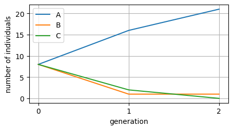
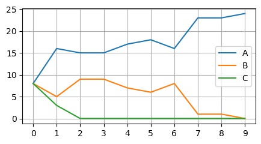

Concept by Elia Mascolo* and Yseult Héjja-Brichard
✉️ eliamascolo94@gmail.com
The aim of this interactive class is to demonstrate how replicants that can inherit mutations can undergo evolution by natural selection if the inheritable characteristics can affect their reproductive success.
Each student was provided with a deck of square cards showing an empty \(8 \times 8\) grid. This deck of cards was available to the students for the whole duration of the class.
<img src="images/test_image.jpg" alt="grid" width="200"/>
<figcaption> Fig. 1 - This is the image caption. </figcaption>
Steps in each generation
The experiment consists of repeating a procedure called a generation several times. Each generation consists of the following three steps:
1. The memorization phase (\(10\) seconds)
Each student was provided with a template card, on which some cells of the grid were crossed with an X, forming a pattern. For example, a pattern may look like this:
<img src="images/test_image.jpg" alt="grid" width="200"/>
<figcaption> Fig. 2 - This is the image caption. </figcaption>
However, the template card was provided face down, so that the students could not see the pattern.
During the memorization phase, the students were allowed to look at the pattern on their template card for \(10\) seconds and asked to try to memorize it. At the end of the \(10\) seconds, the students had to turn the template card face down again.
2. The replication phase (\(30\) seconds)
As soon as they had turned the template face down, they had to copy the observed pattern onto the empty cards they were provided (without being able to look at the template again). They were asked to try to create as many correct copies of the template as possible over \(30\) seconds. They were told that translations or rotations of the pattern on the grid count as correct replicas. For example, the following three cards display the same pattern.
<img src="images/test_image.jpg" alt="grid" width="200"/>
<figcaption> Fig. 3 - This is the image caption. </figcaption>
3. The competition phase
The templates were collected into a pile called the “generation record”, which was put aside. Instead, the replicas were all put into a bag. The number of replicas largely exceeded the number of students. Each student was then randomly assigned a new template card randomly drawn from the bag. The remaining cards in the bag were discarded.
Once each student has a new template, a new generation can start. The process is repeated until a desired number of generations is reached.
Recording results
For each generation, the pile of template cards was collected (the “generation record”). Therefore, we had one pile of \(N\) cards per generation (where \(N\) is the number of students in the class). For each pile, the number of copies of each type of pattern was counted. Translated or rotated patterns count as the same pattern (see Fig XXX).
The obtained counts were organized into a table.
Results
The class was composed of \(24\) students (\(N=24\)). At generation 0, the “population” of template cards that had been distributed to the students was composed of the following three patterns (8 copies each):
<img src="images/test_image.jpg" alt="grid" width="200"/>
<figcaption> Fig. 4 - This is the image caption. </figcaption>
We named the patterns with the letters A, B and C.
The results of the experiment are summarized in the following table.
Generation
A
B
C
0
8
8
8
1
16
1
2
2
21
1
0
We can also visualize the number of A, B and C over generations through a line plot as follows.
import matplotlib.pyplot as pltplt.rcParams['figure.figsize'] = [5, 2.5]plt.plot([8, 16, 21], label='A')plt.plot([8, 1, 1], label='B')plt.plot([8, 2, 0], label='C')plt.xticks(list(range(3)))plt.xlabel('generation')plt.ylabel('number of individuals')plt.grid()plt.legend()plt.show()

👀 The students were asked to comment on the results shown in the table. They made two observations: * Observation 1:
The number of A cards increased each generation, while the number of B and C types decreased very quickly. * Observation 2:
The total number of A, B and C cards in generations \(1\) and \(2\) is no longer \(24\), even though in each generation one card was assigned to each student (so \(24\) in total).
💡 Students were asked to explain the observations.
Interpretation of Observation 1 (Hypothesis 1):
The students noted that reproducing pattern A was easier than reproducing patterns B or C. More copies of A were generated in each generation and, therefore, the bag contained more copies of A than the other types of patterns. As a consequence, students were more likely to receive an A card in the next generation, when cards were randomly drawn from the bag.
Interpretation of Observation 2 (Hypothesis 2):
One student suggested that, due to copying errors, some cards in generations \(1\) and \(2\) may not correspond to any of the three original patterns, A, B and C. That could explain why the count of A+B+C was no longer \(24\).
🔍 We then tested the students’ explanations.
Testing Hypothesis 1
By looking at cards that went into the bag at the end of generation 0, which had been kept aside, we could test Hypothesis 1. The majority of the cards were of type A, confirming that more copies of A were produced, compared to B and C cards, although the templates were 8 per type and they all had the same amount of replication time. Hypothesis 1 was confirmed.
Testing Hypothesis 2
By inspecting the piles of cards for generations \(1\) and \(2\) (the “generation records”), we found some cards that didn’t correspond to any of the three original patterns A, B and C. These cards were termed mutants. The mutants were \(5\) in generation 1 and \(2\) in generation 2 (see Mutants, below). When taking the mutants into account, the total number of cards per generation was indeed \(24\). Hypothesis 2 was confirmed.
Mutants
Mutants at generation \(1\):
<img src="images/test_image.jpg" alt="grid" width="200"/>
<figcaption> Fig. 5 - This is the image caption. </figcaption>
Mutants at generation \(2\):
<img src="images/test_image.jpg" alt="grid" width="200"/>
<figcaption> Fig. 6 - This is the image caption. </figcaption>
Thus, we updated the table to account for the mutants. This way, all the cards were counted at each generation. For simplicity, we categorized all the mutants under a single class named X.
Generation
A
B
C
X
0
8
8
8
0
1
16
1
2
5
2
21
1
0
2
Conclusions
We concluded that the frequency of each type of pattern can change across generations due to chance (after all, the cards composing each new generation are randomly sampled from the bag) but also partly due to another logical principle. The principle is the following: if a pattern is more successful at being replicated than the others, its frequency in the population is more likely to increase. Now that we understand these two principles acting on the frequencies of the competing replicants, we are ready to name them according to the scientific literature:
GENETIC DRIFT: the (unpredictable) effect that random chance has on the frequency of each type of replicant.
NATURAL SELECTION: the (predictable) bias in the frequency of each type of replicant due to their (different) reproductive success.
The overall process that the population of \(N\) replicants underwent, where the frequencies of the different types change over generations, is called EVOLUTION.
Homework questions
Question 1
We discussed that evolution is not completely predictable because chance is involved in several parts of the process. However, some scenarios may be more/less predictable than others. As an exercise, try to think about the role that the population size \(N\) plays. For example, compare the scenarios where \(N\) is very small/very large. Which one will evolve in a more predictable way?
Question 2
The balance between genetic drift and natural selection (see Conclusions to check the terminology) can also depend on the difference in reproductive success (evolutionary biologists use the term fitness) between the different types of replicants. Compare the scenarios where the types are very similar/very different in reproductive success. Which one will evolve in a more predictable way?
Evolutionary simulations
The experiment we performed with the replicards is a demonstration of how evolution by natural selection works. However, it has two important limitations: 1. We only run a couple of generations, but it would be interesting to follow the evolution of the replicards through many generations. 2. We only experimented with a given initial condition (patterns A, B and C in equal frequencies), but it would be interesting to test patterns that are more different or more similar to each other in terms of their reproductive success.
To that end, we can use computer simulations to get very quick empirical answers to our questions.
The virtual replicards
We can use the Python programming language to run computer simulations of the replicards’ evolution, by importing the code (XXX). Specifically, we will import the following types of Pthon classes * Organism : objects of this class represent the individuals composing the population (like the replicards); they can reproduce (i.e., create a copy of themselves). * Population : this is a handy class that can be used to generate reports of the evolution of a population; it can visually summarize the results of a simulation with a plot.
as well as the create function * create : a function that can be used to generate the initial population. It requires to specify three parameters: (1) the type of organism, i.e., whatever name that identifies that type; (2) the (expected) reproductive success of that type of organism; (3) the number of organisms of that type that must be created.
We can now set the initial condition (the population at “Generation 0”) for our evolutionary simulation.
First, we set how many “organisms” per type are present at the beginning. Here we simulate the in-class experiment by setting three patterns, 8 copies each, for a total population size of \(N=24\).
n_a =8# Initial number of An_b =8# Initial number of Bn_c =8# Initial number of C
Next, we can decide how easy it will be to replicate each type of pattern, by setting the expected (average) number of copies each pattern get at each generation.
w_a =12# Expected number of offspring for A per generationw_b =8# Expected number of offspring for B per generationw_c =4# Expected number of offspring for C per generation
Run the evolutionary simulation
We are now ready to run a computer simulation.
import randomfrom evo_sim_objects import Population, create# Initialize populationpop = Population(create('A', w_a, n_a) + create('B', w_b, n_b) + create('C', w_c, n_c))# Population sizeN = pop.sizeprint("The population size is N =", N)# Keep evolving until fixation is reachedwhilenot pop.fixation:# Reproduction based on fitness pop_offspring = []for org in pop.organisms: pop_offspring += org.reproduce() parents_and_offspring = pop.organisms + pop_offspring# Maintain population size constant at N, the environment's carrying capacity new_pop = random.sample(parents_and_offspring, N)# Update the population pop.update(new_pop)# Plot results of the evolutionary simulationpop.plot_evolution()
The population size is N = 24

The graph displays how many individuals of each type are present in each generation, while the total population size remains constant. The simulation stopped when one of the types took over the population completely.
Run your own experiments
If you are running this as a Jupyter Notebook, you can go back to the Settings and change the parameters that specify the initial conditions. In particular, if you have thought about the Homework questions, it is time for you to put your thoughts to the test! For example, to get the answer to Question 1, you can change the population size to make it very big or very small, and run the simulation several times to see if results become more consistent or more unpredictable. Similarly, for Question 2 you can play with the w_a, w_b and w_c parameters, which control the reproductive success (the “fitness”) of each type. You can make it more unequal (for example, 12, 2, 1) or more similar to each other (for example, 12, 11, 10).
In-class discussion
Randomness
When running the same simulation (with the same initial population) several times, we observed different outcomes. Why is that?
In the code, the w_a, w_b and w_c parameters define the average number of offspring per generation. However, the exact number of offspring is randomly assigned (if you are statistically minded, the precise way this is done is by sampling from a Poisson distribution). Moreover, at each generation, \(N\) individuals are randomly sampled (to keep the population size constant). These random processes make the evolution to some extent unpredictable. Thus, they simulate the phenomenon that we called genetic drift (see Conclusions to check the terminology).
The computer simulations can help us demonstrate empirically the balance between random chance and natural selection in evolving populations (see the paragraph “Run your own experiments”).
Mutations
However, a limitation of our computer simulations is that the replication occurs without errors. No mutations are introduced, and therefore, no new types. On the contrary, the experiment performed by the students with the replicards included accidental mutations, allowing for the appearance of mutants.
What is a mutation?
We reasoned that not all modifications qualify as mutations. For example, a card got bent during the replication process. However, when being used as a template, the copies of that card (the “offspring”) were not bent because the students were only copying the pattern of X marks, not every possible physical feature. Evolution acts on mutations, which are not any kind of modifications but rather the modification of inheritable traits. In the case of the replicards, the inheritable traits are the positions of the X marks, which are a form of digital information. Actual living beings don’t carry grids of X marks, but rather a sequence of nucleotides making a long molecule called DNA, which is also a form of digital information. Modifying other parts of the organism would constitute a modification but not a mutation. For example, if I lose a finger in an accident, my children will still be born with 10 fingers, not 9. Instead, if the DNA sequence in my “germline” cells gets mutated in some parts (genes) related to finger development (for example, HoxA and HoxD genes), my offspring could have a number of fingers different from 10, even if I have 10 fingers (as in the case of people with polydactyly).
What do you think could happen if we were to continue the replicards protocol for a very very large number of generations?
A student suggested that eventually the population would be taken over by a replicard containing a single X. This pattern could be produced if, at the end of the 30 seconds of the replication phase, a student had just started making a new copy of the template. The prematurely interrupted replication process would leave the card filled with only one X mark. If this card is lucky enough to be sampled from the bag, it could end up dominating the population due to its high reproductive success (high fitness). This high success would be simply due to the fact that many more copies of it could be made in 30 seconds, compared to other more complicated patterns.
Phylogenesis
XXX Text here …
Materials and Methods
Replicards
The replicards were \(7 \times 7\) square grids (of size 7 cm \(\times\) 7 cm), printed on thick paper. The X marks on the cells were drawn by the students using pencils.
Simulations
The code was written in Python and is available at XXX.